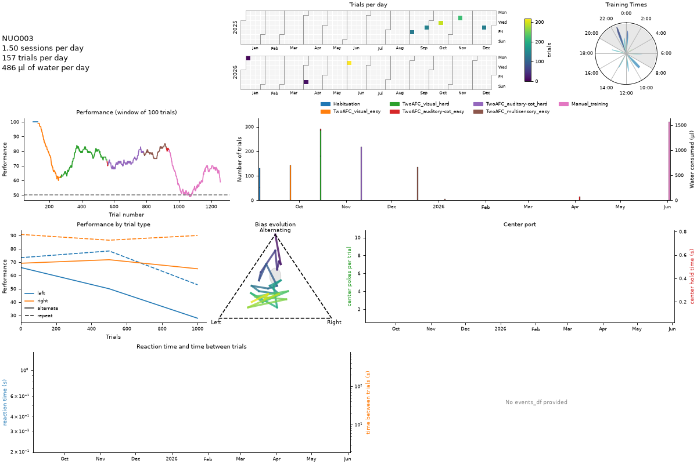

lecilab-behavior-analysis#
Analysis and figures of the behavior of mice trained in the
Training Village, in
the tasks of auditory-task-python (two-alternative forced choice with
visual, auditory and multisensory stimuli).
It is used by:
the daily reports of every project (village-report-generator),
the visualizer (
behavior-data-visualizer),the analysis notebooks (
behavior-analysis-notebooks).

What it does#
Load |
Trials of a subject or of a project, and the events and sessions summary of every setup (box) of a project. |
Prepare |
|
Measure |
Performance, choices and biases, timing, engagement, box occupancy, psychometric fits and regressions. |
Draw |
Ready-made figures (training history of a subject, summary of a session) made of panels that never break the whole figure. |
Report |
Tables and figures of the daily report that never raise. |